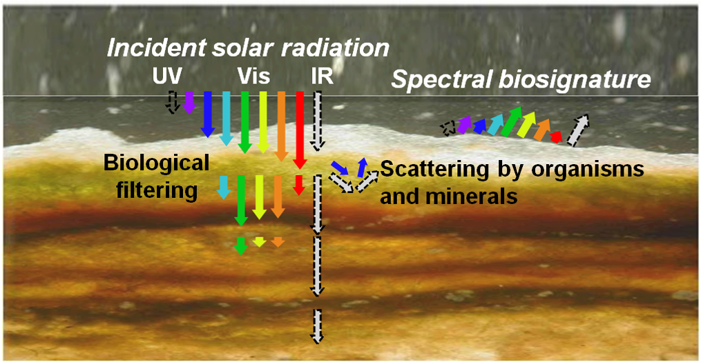

Radiative transport in microbial mats and sediment beds
My primary research projects pertain to modeling radiation (light) transport within microbial mat ecosystems. Microbial mats are vertically stratified microorganism consortia that inhabit periodically wetted environments, such as intertidal flats and salt deposits. Mats are the Earth’s oldest ecosystems, first appearing in the fossil record about 3 billion years ago. These systems have therefore played a vital role in biogeochemical cycles (for example, oxygenation of the atmosphere) throughout most of Earth’s history. As these are primarily photosynthetic systems, their metabolic rates are driven by light availability within the mat, which changes drastically with depth, both in terms of magnitude and spectral content. Accurate modeling of radiation transport in mats therefore enables quantification of depth-dependent metabolic rates, such as oxygen production and carbon dioxide consumption. Additionally, modeling radiative transport in mats has applications in exoplanetary biosignature detection - we can compare simulated spectral reflectance signatures of actual and hypothetical mats to telescopic images of distant planets to make informed judgments on the possible presence of microbial mats on those planets.
A section of microbial mat. Scale in cm.
Scattering and absorption of light at different wavelengths in a microbial mat.